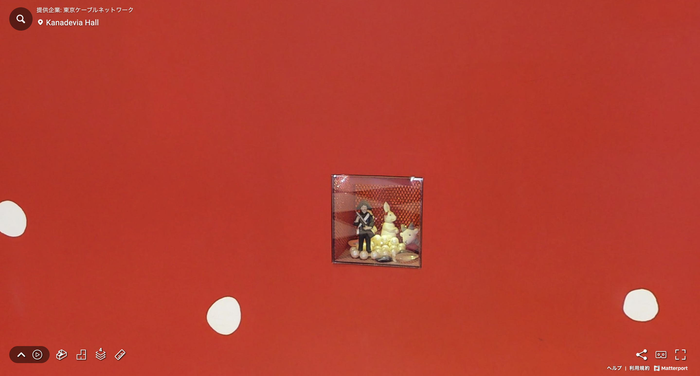
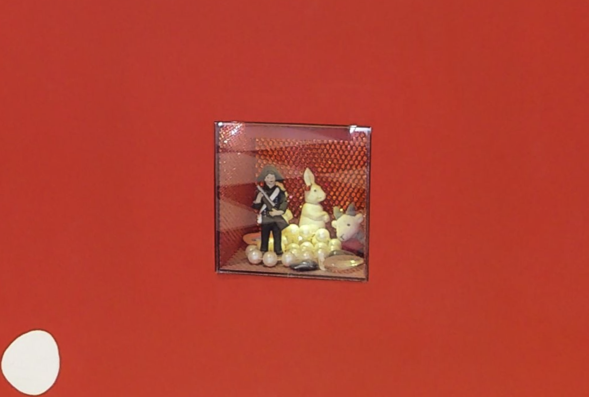
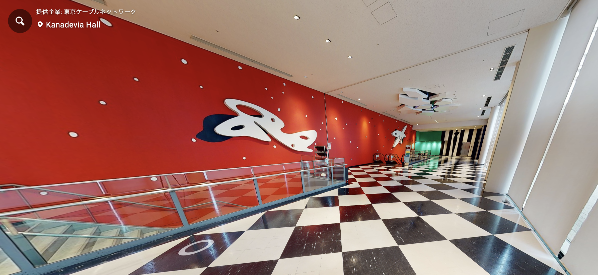

オジイはなんでも知っていますね。
それではさっそく中に入ってみましょう。

広い入り口をくぐると、現代的なデザインの内装が広がります。

微生物のような図柄を横目に見ながら、中へ。
当日はこの辺りでチケットを確認することになりそうですね。
事前に手元に用意しておくとスムーズです。

中にはさっそく案内板が。
さて、どの階から見ていこうかな。
おや…？
雲に乗った感覚で会場を見て回る新感覚バラエティー「空からホールを見てみよう」。
今日は「ミュージカル テニスの王子様 4th season 青学 vs 氷帝 全国大会編」の
会場になっている、Kanadevia Hall（カナデビアホール）を見てみましょう。
ナビゲーターはいつも六角中を浜から見守るオジイです。
ここがカナデビアホールの入り口です。
カラフルな入り口で楽しげな気分を盛り上げてくれますね。
オジイはなんでも知っていますね。
それではさっそく中に入ってみましょう。
広い入り口をくぐると、現代的なデザインの内装が広がります。
微生物のような図柄を横目に見ながら、中へ。
当日はこの辺りでチケットを確認することになりそうですね。
事前に手元に用意しておくとスムーズです。
中にはさっそく案内板が。
さて、どの階から見ていこうかな。
おや…？
公演アニマルズ🐻
空から見えた動物を見つけて捕獲し、コレクションするミニ企画、
「公演アニマルズ」。
今日はどんな動物を見つけたのでしょう？

あれは……？


よかったですね！
さあ、気を取り直してホールの中を探索してみましょう。

エスカレーターを降りて、第2バルコニーへ行ってみます。

この会場は、座席数3,190席。
入り口は1階にあり、そこから地下1階、2階、3階と下がる形で建てられています。

ここは地下1階にある「第2バルコニー」。
いわゆる2階席のエリアです。
さっそく中に入っていきましょう！

ここは第2バルコニーのC2エリア最後列。
ほぼ正面に位置しているので、ステージは見やすいですが、
ちょっぴり遠いですね。

第2バルコニーの3列目です。
この辺りなら、目がいい人は裸眼でもいいかも。


第1バルコニーに降りてみました。
ここもおそらく「見切れ席」もしくは「サイドシート」です。
やっぱり見づらい場所ですが、
公演が始まってからでもチケットが残っている可能性の高い席です。
すでに何度も公演を見ている人や、ある程度見る場所が決まっている人は
この席でも楽しめるんですよ。

さて、第1バルコニーの正面寄りの席です。
第1バルコニーの最後列ですが、ここもかなり見やすい場所になります。
ここより前の席であれば、観劇にあたって何も心配することはなさそうです。

ここまでは当たる可能性が高そうな席を見てきましたが、
ここで一度いちばん前の「アリーナ」も見ていきましょう。
現在はまっさらなエリアになっていますが、公演時は他の座席と同じイスがずらりと並びます。
このエリアが当たれば言うことなしです！
ここまでスルーしてきてしまいましたが……
最も遠い「第3バルコニー」も見てみましょう。
見え方は、果たして……？

思ったよりは見えにくさを感じません。
ここは最後列ですが、細かい動きは見えにくい分、
全体を見渡すのにぴったりなんです。
色々な場所につい目移りしてしまう公演では、
これくらいの距離で見るのもまた楽しい体験になりそうです。

第3アリーナの最前列です。
ここも十分に見やすい席ですね。
最後に、ウワサの座席を見てみましょう。

TOHOなどの映画館や、以前行った青年館のような厚みのある席ではないようです。
一定数、このイスと相性の悪い人がいる様子。
音楽ライブ等にも使われるホールなので、そもそも座席があまり使われないよう。
休憩中に立ち上がったり、伸びをしたり、
体を疲れさせない工夫をしましょう。

さあ、ひと通り会場を見てまわりましたね。
観劇のイメージはついてきましたか？
それでは、このグッズ販売スペースになりそうなエリアでお別れです。
数日後にはここに立っているイメージをしながら、
当日を楽しみにしていてください！

さようなら！